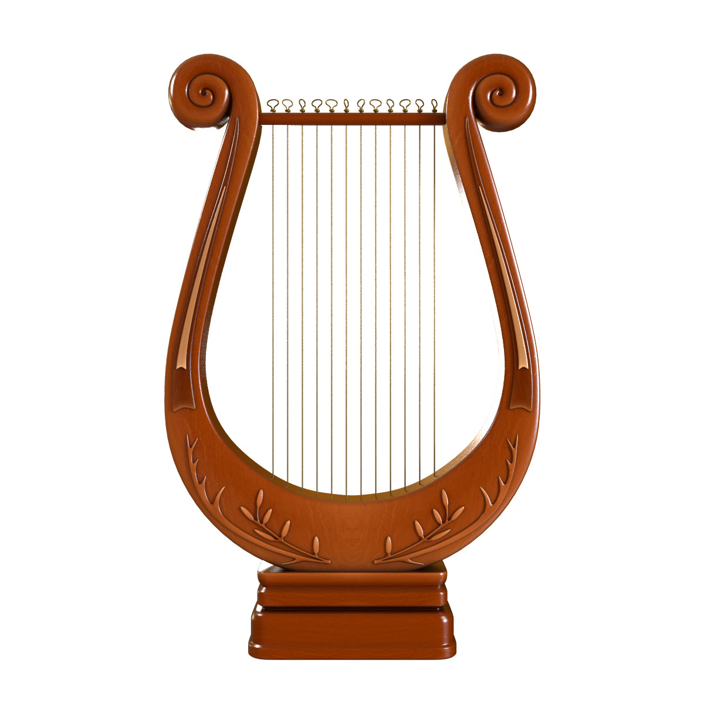
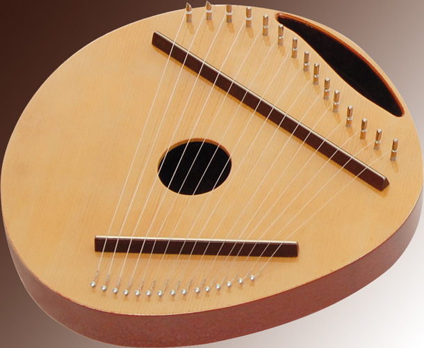
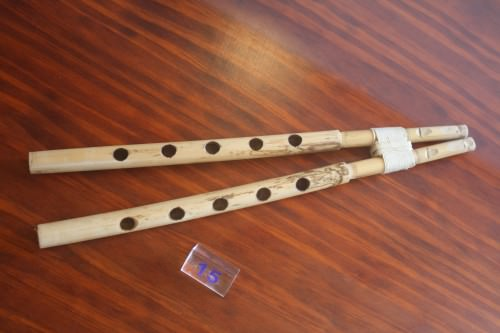
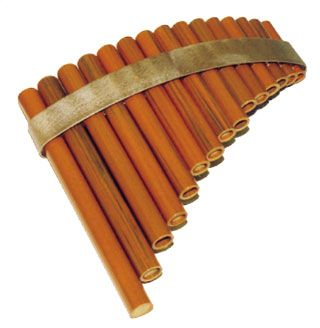

La musique tient une place essentielle dans la vie sociale, politique et religieuse de la Grèce ancienne.
|
La plus beau des arts par rapport au Grecs |
La musique |
|
Le peuple qui a inventé la musique dans la monde grecque |
Les Thraces |
|
D’où vient le mot musique |
Le mot grec moûsai |
|
Les premières à exprimer leur culture utilisant la musique |
Les musiciens grecques |
|
Le premier système de la notation musicale |
La notation musicale de la Grèce Ancienne |
|
 |
La lyre |
|
 |
La cithare |
|
 |
L’aulos |
|
 |
La syrinx |
|
L’instrumentation des Grecs Anciennes |
La musique purement instrumentale |
Les Grecs attribuent toutes sortes de vertus à la musique, un pouvoir merveilleux sur les âmes. Leurs philosophes avaient défini très minutieusement l'expression ou le caractère moral (êthos) de chaque mode.